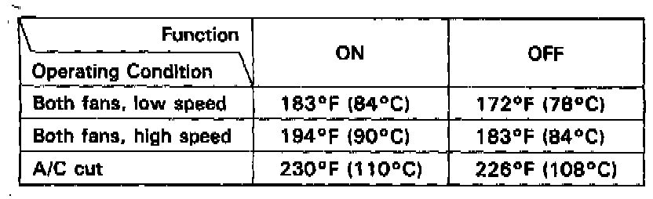

Radiator Cooling Fan Control Module: Description and Operation

FAN CONTROL SYSTEM:
- The fan control unit controls the operation of the radiator fan and condenser fan. Both fans run at the same time whenever the engine is running.
- The control unit uses inputs from the radiator fan control sensor and A/C triple pressure switch (A and B) in the A/C system to determine when the fans should run and at what speed.
- Additionally, the temperature switch shuts down the A/C system if the engine coolant temperature exceeds 23O°F (110°C). If the pressure in the A/C system is higher than normal, pressure switch A opens and the fans run at high speed only. See Heating and Air Conditioning for a description of that function.
RADIATOR FAN CONTROL MODULE:
- When the engine oil temperature is above approx. 198°F (92°C) after the engine has stopped, the condenser fan starts running to cool the engine for a maximum of 15 minutes.
- When the temperature falls below approx. 171 °F (77°C), the fan stops.
- The fan motor runs at low speed to decrease operating noise.
- The engine oil temperature switch is located on the right valve cover, and the radiator fan control module is located on the right kick panel. If necessary, the fan will start running five seconds after the ignition switch is turned off.